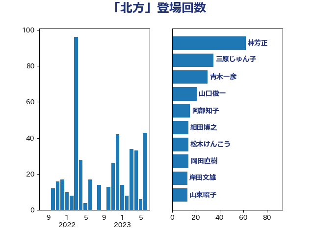

単語「北方」

| 林芳正 | 自由民主党 | 62 回 |
| 三原じゅん子 | 自由民主党 | 35 回 |
| 青木一彦 | 自由民主党 | 30 回 |
| 山口俊一 | 自由民主党 | 21 回 |
| 阿部知子 | 立憲民主党 | 15 回 |
| 細田博之 | 自由民主党 | 14 回 |
| 松木けんこう | 立憲民主党 | 14 回 |
| 岡田直樹 | 自由民主党 | 14 回 |
| 岸田文雄 | 自由民主党 | 13 回 |
| 山東昭子 | 自由民主党 | 13 回 |
| 紙智子 | 日本共産党 | 9 回 |
| 尾辻秀久 | 無所属 | 9 回 |
| 鈴木宗男 | 日本維新の会 | 8 回 |
| 道下大樹 | 立憲民主党 | 7 回 |
| 西銘恒三郎 | 自由民主党 | 7 回 |
| 鈴木貴子 | 自由民主党 | 6 回 |
| 榛葉賀津也 | 国民民主党 | 6 回 |
| 勝部賢志 | 立憲民主党 | 5 回 |
| 稲津久 | 公明党 | 4 回 |
| 玄葉光一郎 | 立憲民主党 | 4 回 |
| 後藤祐一 | 立憲民主党 | 4 回 |
| 神谷裕 | 立憲民主党 | 3 回 |
| 渡辺周 | 立憲民主党 | 3 回 |
| 江田憲司 | 立憲民主党 | 3 回 |
| 武井俊輔 | 自由民主党 | 3 回 |
| 横山信一 | 公明党 | 3 回 |
| 山崎誠 | 立憲民主党 | 3 回 |
| 鬼木誠 | 立憲民主党 | 2 回 |
| 高木宏壽 | 自由民主党 | 2 回 |
| 高木啓 | 自由民主党 | 2 回 |
| 青山繁晴 | 自由民主党 | 2 回 |
| 長浜博行 | 無所属 | 2 回 |
| 芳賀道也 | 国民民主党 | 2 回 |
| 秋本真利 | 無所属 | 2 回 |
| 福岡資麿 | 自由民主党 | 2 回 |
| 石橋通宏 | 立憲民主党 | 2 回 |
| 浜野喜史 | 国民民主党 | 2 回 |
| 浜田靖一 | 自由民主党 | 2 回 |
| 浜口誠 | 国民民主党 | 2 回 |
| 杉本和巳 | 日本維新の会 | 2 回 |
| 本田太郎 | 自由民主党 | 2 回 |
| 本庄知史 | 立憲民主党 | 2 回 |
| 山田賢司 | 自由民主党 | 2 回 |
| 小田原潔 | 自由民主党 | 2 回 |
| 奥野総一郎 | 立憲民主党 | 2 回 |
| 吉田豊史 | 無所属 | 2 回 |
| 吉川ゆうみ | 自由民主党 | 2 回 |
| 佐藤正久 | 自由民主党 | 2 回 |
| 上杉謙太郎 | 自由民主党 | 2 回 |
| 上川陽子 | 自由民主党 | 2 回 |
| 三宅伸吾 | 自由民主党 | 2 回 |
| 高村正大 | 自由民主党 | 1 回 |
| 高木毅 | 自由民主党 | 1 回 |
| 音喜多駿 | 日本維新の会 | 1 回 |
| 青山大人 | 立憲民主党 | 1 回 |
| 長友慎治 | 国民民主党 | 1 回 |
| 鎌田さゆり | 立憲民主党 | 1 回 |
| 鈴木敦 | 国民民主党 | 1 回 |
| 金子恵美 | 立憲民主党 | 1 回 |
| 野田佳彦 | 立憲民主党 | 1 回 |
| 野村哲郎 | 自由民主党 | 1 回 |
| 荒井優 | 立憲民主党 | 1 回 |
| 若松謙維 | 公明党 | 1 回 |
| 羽田次郎 | 立憲民主党 | 1 回 |
| 緒方林太郎 | 無所属 | 1 回 |
| 福田昭夫 | 立憲民主党 | 1 回 |
| 石川香織 | 立憲民主党 | 1 回 |
| 石井準一 | 自由民主党 | 1 回 |
| 泉健太 | 立憲民主党 | 1 回 |
| 江藤拓 | 自由民主党 | 1 回 |
| 木村次郎 | 自由民主党 | 1 回 |
| 斎藤アレックス | 国民民主党 | 1 回 |
| 岩本剛人 | 自由民主党 | 1 回 |
| 小西洋之 | 立憲民主党 | 1 回 |
| 小島敏文 | 自由民主党 | 1 回 |
| 守島正 | 日本維新の会 | 1 回 |
| 大島敦 | 立憲民主党 | 1 回 |
| 大島九州男 | れいわ新選組 | 1 回 |
| 和田義明 | 自由民主党 | 1 回 |
| 佐藤英道 | 公明党 | 1 回 |
| 伊東良孝 | 自由民主党 | 1 回 |
| 上田清司 | 国民民主党 | 1 回 |